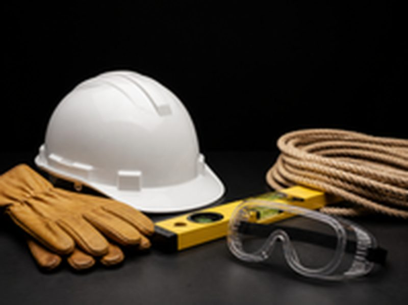

A simple PPE checklist for Egyptian worksites

Most PPE problems on site start at the purchase order: the wrong glove for the task, boots ordered in one size range, or masks that do not seal. A short checklist fixes most of it.
1. What are the hazards, job by job?
List each role on site (steel fixers, electricians, drivers, cleaners) and the main hazard for each: falling objects, cuts, dust, noise, chemicals, heat. This becomes your PPE matrix.
2. Which standard does each item need?
Ask for the standard on the quotation: EN 397 helmets, EN 388 gloves with the right cut level, EN 20345 S3 boots, EN 149 FFP2 masks. A standard number is the easiest way to compare two offers fairly.
3. Do the sizes match your people?
Collect shoe and glove sizes before ordering. An S3 boot that does not fit stays in the store.
4. How often is each item replaced?
Gloves and masks are consumables, helmets and harnesses have an inspection cycle. Agree minimum stock levels so the site never runs out.
5. Who signs for it?
Issue PPE against a name. It cuts losses and gives you a record if an inspector or client asks.